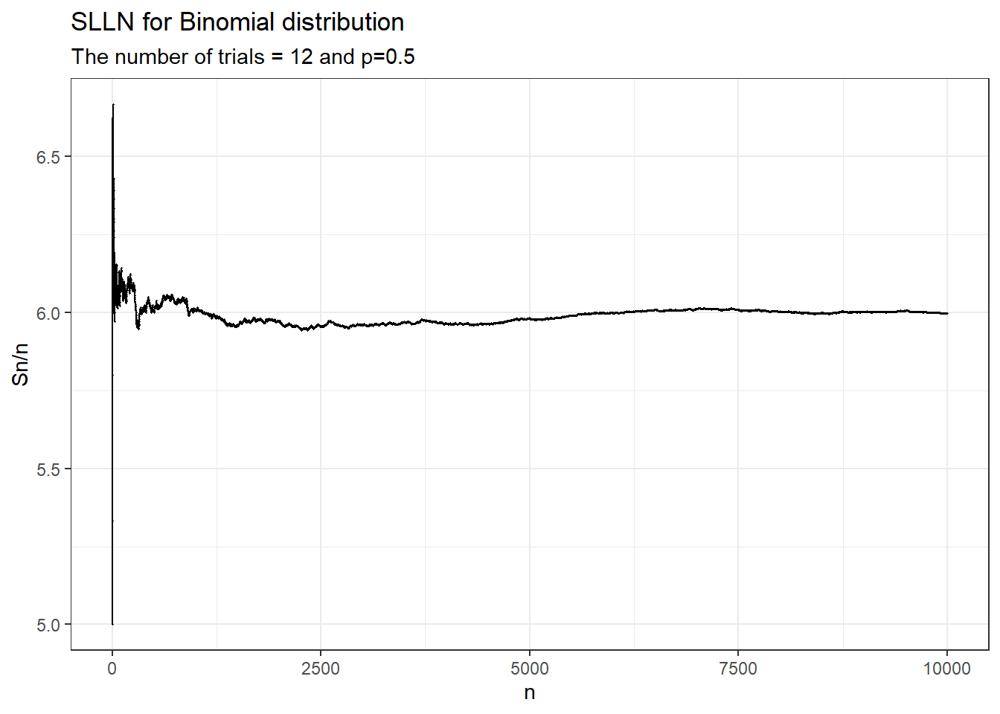
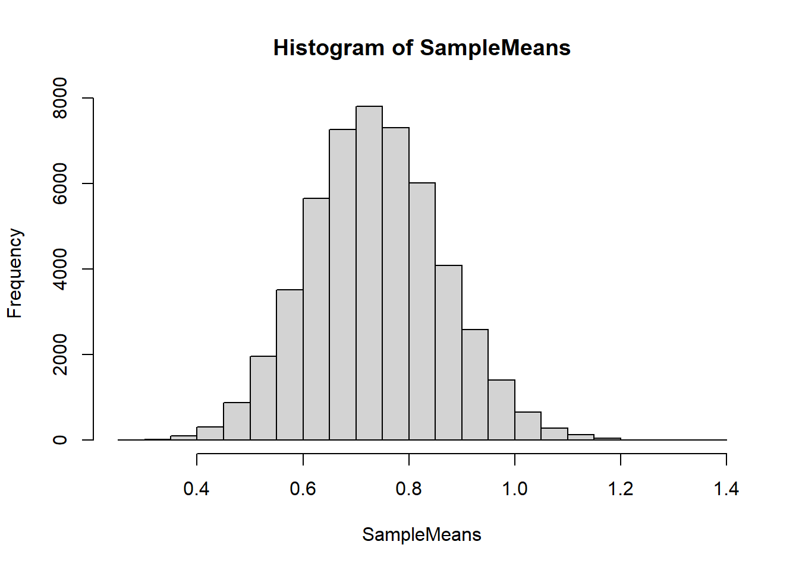

An introduction to probability using simulation and mathematical frameworks, with emphasis on the probability needed for more advanced study in statistical practice. Topics covered include probability spaces, random variables, discrete and continuous probability distributions, probability mass, density, and distribution functions, expectation and variance, independence, conditional probability, the law of large numbers, the central limit theorem, sampling distributions. Computer simulation will be taught and used extensively for calculations and to guide the theoretical development.
Solutions and code provided by Professor Selvakkadunko Selvaratnam and modifications were made by myself.
### R code for Q4 in TUT 1 ###
set.seed(1)
n = 10000
ctr = 0
simlist = numeric(n)
while (ctr < n) {
trial <- sample(1:6, 2, replace = TRUE)
if (sum(trial) == 7) { # Check if sum is 7
success <- if (trial[1] == 2) 1 else 0
ctr <- ctr + 1
simlist[ctr] <- success
}
}
mean(simlist) # Proportion of the required events## [1] 0.1624### Program for TUT2 ###
## Q2 ##
# display powers 1 to n of x
# input
x <- 7
n <- 5
result <- 1
for (i in 1:n){
result <- result * x
cat(format(i, width = 6), format(result, width = 10), "\n", sep ="")
}## 1 7
## 2 49
## 3 343
## 4 2401
## 5 16807## Q3 (i)
funsum <- function(x, y){
z <- x + y
return(z)
}
# Try with different inputs
funsum(2, 40)## [1] 42## Q3 (ii)
n_factorial <- function(n){
# Calculate n factorial
n_fact <- prod(1:n)
return(n_fact)
}
# Try with different inputs
n_factorial(5)## [1] 120### TUT3 ###
## Q1 ##
nfact2 <- function(n){
# calculate n factorial
if (n == 1){
cat("called nfact2(1)\n")
return(1)
} else {
cat("called nfact2(", n, ")\n", sep="")
return(n*nfact2(n-1))
}
}
nfact2(6)## called nfact2(6)
## called nfact2(5)
## called nfact2(4)
## called nfact2(3)
## called nfact2(2)
## called nfact2(1)## [1] 720## Q4 ##
A = matrix(c(3, 4, 2, 4, 9, 3, 6, 7, 2, 1 , 6, 9), nrow = 3, ncol = 4)
transA = t(A)
solve(A%*%transA)## [,1] [,2] [,3]
## [1,] 0.18366880 -0.13700823 0.07090576
## [2,] -0.13700823 0.11576192 -0.06714445
## [3,] 0.07090576 -0.06714445 0.05255667### TUT 8 ###
library(ggplot2)
set.seed(1)
## Binomial Distribution ##
s <- 12 # number of trials
p <- 0.5
n <- 10000
result <- numeric(n)
sn <- 0
for (i in 1:n){
sn <- sn + rbinom(1, s, p)
result[i] <- sn/i
}
ind <- 1:n
data <- data.frame(Index = ind, result = result)
ggplot(data, aes(x = Index, y = result)) +
geom_point(size = 0.2) +
geom_line() +
labs(title = "SLLN for Binomial distribution",
subtitle = "The number of trials = 12 and p=0.5",
x = "n",
y = "Sn/n") 
### TUT 9 ###
## Binomial Distribution ##
set.seed(1)
s <- 50000 # number of simulations
p <- 0.15 # probability of success
t <- 5 # number of trials
n <- 40 # sample size
SampleMeans <- numeric(s)
SimValues <- matrix(0, n, s)
for (i in 1:s){
SimValues[,i] <- rbinom(n, t, p)
SampleMeans[i] <- mean(SimValues[,i])
}
hist(SampleMeans)